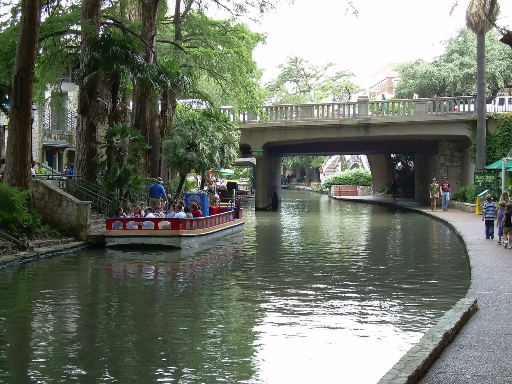

Compare the current water features, room occupancy, distance from the rest of the itinerary, parking, and full price.
San Antonio, Texas · family hotels
San Antonio Family Hotels
Researched with AI (Miles Rowan) · sources linked and dated · How we check
Downtown, start with Embassy Suites; for a water trip, Hyatt Hill Country. Twelve hotels compared by rooms, pools, area and price.

About how much a night? Family of 4, two Tuesdays, Jan 19 and Feb 23, 2027 (estimate):
- From $164 vacation-club resort outside Downtown (sales offers possible; room type not shown) (Wild Oak, Jan 19; up to $192)
- From $183 Downtown hotels with free breakfast, some with kitchens (Home2, Feb 23; group up to $302)
- From $320 classic River Walk hotels (Contessa, Jan 19; group up to $654; no price shown: Omni)
- From $493 resorts outside Downtown with pools, slides or water parks (La Cantera, Feb 23; group up to $693; no price shown: JW Marriott)
Google Hotels, 2 adults + kids 5 and 8, seen Nov 2. Room type, taxes and fees not shown. Parking, resort fees and weekends can cost more. Check live rates for your dates.
Hotels in each group and how prices were checked
vacation-club resort outside Downtown (sales offers possible; room type not shown): Hyatt Vacation Club at Wild Oak Ranch. Highest: $192, Wild Oak, Feb 23.
Downtown hotels with free breakfast, some with kitchens: Embassy Suites by Hilton San Antonio Riverwalk Downtown, Homewood Suites by Hilton San Antonio-Riverwalk/Downtown, Home2 Suites by Hilton San Antonio Riverwalk, Drury Plaza Hotel San Antonio Riverwalk. Highest: $302, Embassy Suites, Jan 19.
classic River Walk hotels: Hyatt Regency San Antonio Riverwalk, Omni La Mansion del Rio, Hotel Contessa, San Antonio Marriott Rivercenter on the River Walk. Highest: $654, Marriott Rivercenter, Feb 23.
resorts outside Downtown with pools, slides or water parks: Signia by Hilton La Cantera Resort and Spa, Hyatt Regency Hill Country Resort and Villas, JW Marriott San Antonio Hill Country Resort and Spa. Highest: $693, Hyatt Hill Country, Jan 19.
Prices are Google Hotels listing prices per night for 2 adults + kids 5 and 8, one night on Tuesday January 19 and February 23, 2027, seen November 2, 2026. Google does not show the room type, the number of rooms, or which taxes and fees are included, so these are estimates, not quotes or family-suite prices. Weekends and events can cost more, and prices swung widely by date: check live rates for your own dates. Older July 2026 samples are no longer shown because their stays have passed. Parking, resort fees, food, a suite or a second room may be extra.
Downtown, start with: Embassy Suites (two rooms, breakfast). Also Homewood or Home2 (kitchen), Drury (included food), Contessa (all suites), Hyatt Regency or Omni (classic), Marriott Rivercenter (pool).
Water is the trip: Hyatt Hill Country, JW Marriott, La Cantera or Wild Oak. Winter visit: confirm which pools and slides are open before paying for a water resort.
Official hotel facts rechecked: September 5, 2026. Online-review sources checked: July 26, 2026. Google family prices seen: November 2, 2026.
Comparison
Quick hotel comparison
Google Hotels, one weeknight on each date in 2027, 2 adults + kids 5 and 8, seen Nov 2. Estimates, not quotes. Price basis. Swipe the table for more.
| Hotel | Nightly price (family of 4) | Best starting point for | Area | Nearby family anchor | Most important check |
|---|---|---|---|---|---|
| Hyatt Vacation Club at Wild Oak Ranch | $164–$192 a night Jan 19: $164 · Feb 23: $192 Check live rate |
Vacation-club resort with a lazy river | West San Antonio / SeaWorld | SeaWorld San Antonio | Check the studio or villa, rate, and water access. |
| Home2 Suites by Hilton San Antonio Riverwalk | $183–$197 a night Jan 19: $197 · Feb 23: $183 Check live rate |
Studio kitchen for a larger family | Downtown / 118 Soledad Street | The Alamo San Antonio | Confirm the 118 Soledad property. |
| Drury Plaza Hotel San Antonio Riverwalk | $203–$273 a night Jan 19: $203 · Feb 23: $273 Check live rate |
Included-food value Downtown | Downtown / River Walk | Hemisfair San Antonio | Confirm the exact room or suite. |
| Homewood Suites by Hilton San Antonio-Riverwalk/ |
$209–$218 a night Jan 19: $218 · Feb 23: $209 Check live rate |
Downtown kitchen and breakfast | Downtown / River Walk | Hemisfair San Antonio | Confirm studio versus one-bedroom layout. |
| Embassy Suites by Hilton San Antonio Riverwalk Downtown | $252–$302 a night Jan 19: $302 · Feb 23: $252 Check live rate |
Two-room suite and breakfast Downtown | Downtown / River Walk | The Alamo San Antonio | Confirm exact suite beds and occupancy. |
| Hotel Contessa | $320–$356 a night Jan 19: $320 · Feb 23: $356 Check live rate |
All-suite River Walk stay | Downtown / River Walk | The Alamo San Antonio | Confirm exact bedding and occupancy. |
| Hyatt Regency San Antonio Riverwalk | $367–$383 a night Jan 19: $383 · Feb 23: $367 Check live rate |
Classic first-visit location | Downtown / Alamo and River Walk | The Alamo San Antonio | Confirm exact beds and occupancy. |
| Signia by Hilton La Cantera Resort and Spa | $493–$586 a night Jan 19: $586 · Feb 23: $493 Check live rate |
Pools near Six Flags | La Cantera / Northwest | Six Flags Fiesta Texas | Confirm the exact room. |
| San Antonio Marriott Rivercenter on the River Walk | $654 a night Feb 23: $654 Check live rate |
Indoor pool and Rivercenter access | Downtown / Rivercenter | LEGOLAND Discovery Center San Antonio | Confirm exact room occupancy. |
| Hyatt Regency Hill Country Resort and Villas | $693 a night Jan 19: $693 · Feb 23: $693 Check live rate |
Full resort and water-play trip | West San Antonio / SeaWorld | SeaWorld San Antonio | Confirm the exact room occupancy. |
| JW Marriott San Antonio Hill Country Resort and Spa | No family price found Google showed none for 2 adults + 2 kids on our dates. Check live rate |
Largest water-complex resort comparison | North San Antonio / TPC Parkway | Natural Bridge Caverns | The current River Bluff limit is five entry wristbands per room. Confirm exact occupancy. |
| Omni La Mansion del Rio | No family price shown Google gave two different prices for this hotel on the same dates, so we show neither. Check live rate |
Historic central River Walk stay | Downtown / River Walk | The Alamo San Antonio | Confirm exact beds and occupancy. |
Price basis: Google listing prices, not quotes
Prices are Google Hotels listing prices per night for 2 adults + kids 5 and 8, one night on Tuesday January 19 and February 23, 2027, seen November 2, 2026. Google does not show the room type, the number of rooms, or which taxes and fees are included, so these are estimates, not quotes or family-suite prices. Weekends and events can cost more, and prices swung widely by date: check live rates for your own dates. Older July 2026 samples are no longer shown because their stays have passed. Parking, resort fees, food, a suite or a second room may be extra.
Trip-style starts
Pick the closest version of your trip
Choose the exact studio or villa and understand the vacation-club context before treating it as a normal resort booking.
Start here when Downtown access, a door between sleep zones, and made-to-order breakfast solve the main family constraints.
Choose Homewood for clearer one-bedroom options; compare Home2 when a two-queen studio for up to six is the target setup.
Breakfast and evening food can reduce trip friction; count elevator crowds, parking, and the exact room against that value.
Compare suite space, indoor-pool access, River Walk location, event noise, and parking rather than treating central hotels as interchangeable.
Hotel cards
12 options: open a hotel for rooms, reviews and checks
Vacation-club resort with a lazy river Hyatt Vacation Club at Wild Oak Ranch West San Antonio / SeaWorld $164–$192 a night family of 4, Jan 19 and Feb 23, Google Hotels estimate, not a quote; room type not shown; sales offers may apply
- Area
- West San Antonio / SeaWorld
- Nightly price (family of 4)
- $164–$192 a night
Google Hotels, family of 4, 1 weeknight: $164 on Jan 19, 2027 · $192 on Feb 23, 2027. Seen Nov 2; not a quote. Check live rate Price basis
Why compare it
- Official inventory includes studios and one- to three-bedroom villas
- Villas publish kitchens and in-room laundry; the resort publishes pools, slides, and a lazy river
Room and family setup
This is a vacation-club property, and some promotional offers may involve a sales presentation. Official room categories checked September 30, 2026: studios and one-bedroom villas sleep up to four; two-bedroom villas sleep up to eight total, with a six-adult limit. For five guests, a two-bedroom villa is the smallest published category to check, not a guarantee of availability, water access, or price. Confirm the assigned kitchen, laundry, and beds. Official Wild Oak room categories.
Themes in recent online reviews
A recent family-heavy public sample often praised villa space, kitchens, pools, the lazy river, activities, and grounds. It also surfaced early restaurant closing, sales-presentation offers, firm beds, and cashless snack-purchase friction.
Price context and key check
Taxes, a larger villa or busy dates can cost more. For five guests, check the two-bedroom villa first. Confirm exact party and ages, bedding, availability, kitchen and laundry equipment, current water access, offer terms, and final stay total; the Google price is for 2 adults and 2 kids, not a five-person quote.
Studio kitchen for a larger family Home2 Suites by Hilton San Antonio Riverwalk Downtown / 118 Soledad Street $183–$197 a night family of 4, Jan 19 and Feb 23, Google Hotels estimate, not a quote
- Area
- Downtown / 118 Soledad Street
- Nightly price (family of 4)
- $183–$197 a night
Google Hotels, family of 4, 1 weeknight: $197 on Jan 19, 2027 · $183 on Feb 23, 2027. Seen Nov 2; not a quote. Check live rate Price basis
Why compare it
- Hilton publishes in-suite kitchens and free breakfast
- Some public two-queen-and-sofa inventory lists occupancy up to six
Room and family setup
This is the 118 Soledad Street Riverwalk property, not the separate Home2 Suites Downtown location. Most rooms are studios, and exact beds, occupancy, and bathroom privacy need checking.
Themes in recent online reviews
A recent family-heavy public sample often praised spacious studios, kitchenette utility, location, and staff. It also surfaced basic breakfast, expensive valet parking, barn-door bathroom privacy, and a May report that the pool was under construction.
Price context and key check
Exact room and demand can move higher. Confirm the 118 Soledad property, exact beds and occupancy, bathroom setup, current pool operation, parking, and final total.
Included-food value Downtown Drury Plaza Hotel San Antonio Riverwalk Downtown / River Walk $203–$273 a night family of 4, Jan 19 and Feb 23, Google Hotels estimate, not a quote
- Area
- Downtown / River Walk
- Nightly price (family of 4)
- $203–$273 a night
Google Hotels, family of 4, 1 weeknight: $203 on Jan 19, 2027 · $273 on Feb 23, 2027. Seen Nov 2; not a quote. Check live rate Price basis
Why compare it
- Drury publishes free hot breakfast and its evening 5:30 Kickback
- The property has rooftop outdoor and indoor pools plus in-room microwaves and refrigerators
Room and family setup
The included food can reduce meal friction, but busy breakfast, elevator, and pool periods may matter. Compare a standard room with the all-suite tower before paying.
Themes in recent online reviews
A recent public sample often praised breakfast, the evening food, location, value, staff, and pools. It also surfaced slow or crowded elevators, buffet lines, pool-towel shortages, and valet cost.
Price context and key check
Suite categories and event dates can move higher. Confirm the exact room or suite, current food schedule, pool operations, parking, and final total.
Downtown kitchen and breakfast Homewood Suites by Hilton San Antonio-Riverwalk/Downtown Downtown / River Walk $209–$218 a night family of 4, Jan 19 and Feb 23, Google Hotels estimate, not a quote
- Area
- Downtown / River Walk
- Nightly price (family of 4)
- $209–$218 a night
Google Hotels, family of 4, 1 weeknight: $218 on Jan 19, 2027 · $209 on Feb 23, 2027. Seen Nov 2; not a quote. Check live rate Price basis
Why compare it
- Hilton publishes full in-suite kitchens and free hot breakfast
- The hotel offers an outdoor pool in a central River Walk location
Room and family setup
Studio and one-bedroom layouts solve different sleep needs. Confirm the actual door separation, beds, occupancy, kitchen equipment, and parking before treating the brand name as enough.
Themes in recent online reviews
Recent public reviews often praised spacious suites, kitchens, breakfast, location, and staff. They also surfaced expensive parking, dated details, repair concerns, and isolated room-odor or cleanliness problems.
Price context and key check
Larger suites and event dates can move higher. Confirm studio versus one-bedroom layout, beds, kitchen equipment, pool status, parking, and final total.
Two-room suite and breakfast Downtown Embassy Suites by Hilton San Antonio Riverwalk Downtown Downtown / River Walk $252–$302 a night family of 4, Jan 19 and Feb 23, Google Hotels estimate, not a quote
- Area
- Downtown / River Walk
- Nightly price (family of 4)
- $252–$302 a night
Google Hotels, family of 4, 1 weeknight: $302 on Jan 19, 2027 · $252 on Feb 23, 2027. Seen Nov 2; not a quote. Check live rate Price basis
Why compare it
- Hilton publishes two-room suites and free made-to-order breakfast
- An outdoor rooftop pool and evening reception add useful hotel-reset options
Room and family setup
Choose the exact suite rather than assuming every listing has the same beds or occupancy. The hotel is central, while valet parking can materially change a car-based trip.
Themes in recent online reviews
A recent public sample often praised the room space, breakfast, location, and staff. It also surfaced high valet cost and occasional maintenance or service variation.
Price context and key check
Larger suites and event dates can move higher. Confirm exact suite beds and occupancy, breakfast timing, pool status, parking, and final total.
All-suite River Walk stay Hotel Contessa Downtown / River Walk $320–$356 a night family of 4, Jan 19 and Feb 23, Google Hotels estimate, not a quote
- Area
- Downtown / River Walk
- Nightly price (family of 4)
- $320–$356 a night
Google Hotels, family of 4, 1 weeknight: $320 on Jan 19, 2027 · $356 on Feb 23, 2027. Seen Nov 2; not a quote. Check live rate Price basis
Why compare it
- The property publishes an all-suite layout with separate living space
- A heated rooftop pool adds a contained Downtown reset
Room and family setup
A suite label does not guarantee enough beds for the family. Confirm the sofa-bed or other sleeping surface, registered occupancy, and whether the living zone provides the separation needed.
Themes in recent online reviews
A recent public sample often praised suite space, location, staff, and the rooftop pool. It also surfaced third-guest bedding not being prepared, no microwave, worn decor, and high parking or total price.
Price context and key check
Room category and strong-demand dates can move higher. Confirm exact bedding and occupancy, living-room separation, microwave need, pool status, parking, and final total.
Classic first-visit location Hyatt Regency San Antonio Riverwalk Downtown / Alamo and River Walk $367–$383 a night family of 4, Jan 19 and Feb 23, Google Hotels estimate, not a quote
- Area
- Downtown / Alamo and River Walk
- Nightly price (family of 4)
- $367–$383 a night
Google Hotels, family of 4, 1 weeknight: $383 on Jan 19, 2027 · $367 on Feb 23, 2027. Seen Nov 2; not a quote. Check live rate Price basis
Why compare it
- The hotel directly connects the Alamo and River Walk planning zones
- Hyatt publishes a rooftop pool
Room and family setup
This is a location-led option rather than a suite, kitchen, or included-breakfast solution. Check the exact two-queen room, bathroom size, event calendar, and room placement.
Themes in recent online reviews
Recent public reviews often praised location, access, cleanliness, and staff. They also surfaced parking cost, Fiesta or hallway noise, smaller bathrooms, elevators, and weaker value for standard rooms.
Price context and key check
Events and room categories can move higher. Confirm exact beds and occupancy, current pool status, event noise, room placement, parking, and final total.
Pools near Six Flags Signia by Hilton La Cantera Resort and Spa La Cantera / Northwest $493–$586 a night family of 4, Jan 19 and Feb 23, Google Hotels estimate, not a quote
- Area
- La Cantera / Northwest
- Nightly price (family of 4)
- $493–$586 a night
Google Hotels, family of 4, 1 weeknight: $586 on Jan 19, 2027 · $493 on Feb 23, 2027. Seen Nov 2; not a quote. Check live rate Price basis
Why compare it
- The property publishes five pools, including a family pool and slide
- The location is the clearest resort start for a Six Flags-led trip
Room and family setup
Rooms, suites, and villas differ substantially. Treat this as a pools-and-Six-Flags comparison, not a claim that every room or pool setup works for every family.
Themes in recent online reviews
Recent public reviews often praised the grounds, views, pools, rooms, staff, and local shuttle. Two current reports raised pool-service or towel-availability problems, while explicit family labeling was thin.
Price context and key check
Larger layouts and popular weekends can move higher. Confirm the exact room, family-pool and slide status, shuttle details, parking, and final total.
Indoor pool and Rivercenter access San Antonio Marriott Rivercenter on the River Walk Downtown / Rivercenter $654 a night family of 4, Feb 23 only, Google Hotels estimate, not a quote
- Area
- Downtown / Rivercenter
- Nightly price (family of 4)
- $654 a night
Google Hotels, family of 4, 1 weeknight: $654 on Feb 23, 2027. Seen Nov 2; not a quote. Check live rate Price basis
Why compare it
- Marriott lists an indoor pool but also labels the amenity Indoor/Outdoor Pool; confirm the current configuration
- Direct Rivercenter access can simplify meals, weather pivots, and a first-visit route
Room and family setup
Published two-queen rooms accommodate four, while some larger suites differ. Convention volume, current pool operation, and expensive parking can matter as much as the map location.
Themes in recent online reviews
A recent mostly general-traveler sample often praised the location, mall access, cleanliness, staff, and pool. It also surfaced high parking and total cost plus a busier convention-hotel feel.
Price context and key check
Suites, conventions, and event dates can move higher. Confirm exact room occupancy, current pool configuration and operation, event calendar, parking, and final total.
Full resort and water-play trip Hyatt Regency Hill Country Resort and Villas West San Antonio / SeaWorld $693 a night family of 4, Jan 19 and Feb 23, Google Hotels estimate, not a quote
- Area
- West San Antonio / SeaWorld
- Nightly price (family of 4)
- $693 a night
Google Hotels, family of 4, 1 weeknight: $693 on Jan 19, 2027 · $693 on Feb 23, 2027. Seen Nov 2; not a quote. Check live rate Price basis
Why compare it
- The official resort pages publish a water park, pools, and the Big Spring lagoon
- Published two-queen rooms accommodate two adults and two children
Room and family setup
This is a resort-led stay near SeaWorld, not a convenient base for walking the River Walk. The exact room, water-feature operating schedule, and daily drive plan still matter.
Themes in recent online reviews
A recent public sample with strong family context often praised the pools, lazy river, activities, grounds, and service. It also surfaced limited midday food, crowded kid-heavy periods, no in-room microwave in some rooms, and a sand-rinse complaint.
Price context and key check
Room category and high-demand resort dates can move higher. Confirm the exact room occupancy, current water-feature schedule, food hours, parking, and final total.
Largest water-complex resort comparison JW Marriott San Antonio Hill Country Resort and Spa North San Antonio / TPC Parkway No family price found no Google price on our dates; check the live rate
- Area
- North San Antonio / TPC Parkway
- Nightly price (family of 4)
- No family price found
Google showed none for 2 adults + 2 kids on our dates. Check live rate Price basis
Why compare it
- Marriott publishes a nine-acre water experience with a lazy river and slides
- Some public two-queen inventory accommodates five, but the exact room controls
Room and family setup
The resort can fill a large share of the trip by itself. It is far from Downtown, and current wristband, slide, pool, room-occupancy, and parking rules need a dated check.
Before planning room rest: Room-rest notice checked September 22, 2026: Marriott lists guestroom and exterior work from summer 2026 through spring 2027, with possible daytime noise and temporary balcony restrictions. Its enhancement FAQ gives work hours of 9am-5pm and an earlier, early-2027 estimate for guestroom completion. These describe different scopes, not a guaranteed finish date. Before booking a nap-dependent stay, confirm work near the exact room and dates; this does not establish disruption in every room or closure of the water complex. Marriott room notice; Enhancement FAQ.
Themes in recent online reviews
A recent public sample often praised the water features, family activities, service, and food. Isolated reports flagged paid parking, a temporarily unavailable slide, and one bathroom-maintenance problem.
Price context and key check
Family occupancy, weekends, and resort demand can push the total higher. The current River Bluff limit is five entry wristbands per room. Confirm exact occupancy, any rule change, water-feature operations, parking, and final total.
Historic central River Walk stay Omni La Mansion del Rio Downtown / River Walk No family price shown Google's prices conflicted; check the live rate
- Area
- Downtown / River Walk
- Nightly price (family of 4)
- No family price shown
Google gave two different prices for this hotel on the same dates, so we show neither. Check live rate Price basis
Why compare it
- The property publishes rooms with two double beds and a heated courtyard pool
- The central location fits a compact classic-sights trip
Room and family setup
This is a historic, location-led hotel rather than a large-family or kitchen solution. The courtyard pool is useful for a short reset, not a resort water day.
Themes in recent online reviews
A recent public sample with meaningful family context often praised the location, courtyard, pool, and staff. It also surfaced a small or shallow pool, limited pool-bar hours, valet or garage friction, and warm halls or elevators.
Price context and key check
Room and event dates can move higher. Confirm exact beds and occupancy, room placement, current pool operation, parking access, and final total.
Common questions
San Antonio family hotel FAQ
Which San Antonio family hotels have a lazy river?
Hyatt Regency Hill Country, JW Marriott San Antonio Hill Country, and Hyatt Vacation Club at Wild Oak Ranch publish lazy-river or substantial water-complex features. Signia by Hilton La Cantera publishes five pools and a family slide instead. Confirm current operating schedules and access rules for the exact dates.
Should a family stay on the River Walk or at a San Antonio resort?
Choose a River Walk hotel when the Alamo, boat ride, Hemisfair, and compact Downtown days lead the trip. Choose a west or north resort when pools, SeaWorld, Six Flags, or a stay-put day matter more than repeated Downtown access. Map the first two days before deciding.
Which San Antonio hotels include breakfast or a kitchen?
Embassy Suites includes made-to-order breakfast and a two-room suite. Homewood and Home2 publish kitchens plus breakfast. Drury includes breakfast and an evening food service. Wild Oak villas publish full kitchens, while its studios differ. Confirm the exact room and current food schedule.
Are these San Antonio hotel prices family-room quotes?
No. The figures are Google Hotels listing prices per night for 2 adults and kids 5 and 8 on Tuesday January 19 and February 23, 2027, seen November 2, 2026. Google does not show the room type or which taxes and fees are included, so treat them as estimates. Parking is usually extra. Compare the exact room, party, dates, fees and full stay total before booking.
Sources checked
How the hotel information was checked
Room and amenity facts come from official property pages. Online-review notes paraphrase a small directional sample from public booking and review pages. Family labeling was strong for some properties and thin for others, so the notes identify recurring themes and conflicts rather than claiming parent consensus. Prices are Google Hotels listing prices through DataForSEO, not live booking quotes.
- Hyatt Regency Hill Country overview
- Hyatt Regency Hill Country rooms
- Hyatt Regency Hill Country Big Spring lagoon
- JW Marriott San Antonio overview
- JW Marriott San Antonio experiences
- Signia by Hilton La Cantera resort amenities
- Signia by Hilton La Cantera things to do
- Hyatt Vacation Club at Wild Oak Ranch
- Hyatt Vacation Club at Wild Oak Ranch rooms
- Embassy Suites San Antonio Riverwalk Downtown
- Homewood Suites San Antonio-Riverwalk/Downtown
- Home2 Suites San Antonio Riverwalk
- Drury Plaza Hotel San Antonio Riverwalk
- Hotel Contessa amenities
- Hotel Contessa FAQ
- Hyatt Regency San Antonio Riverwalk
- San Antonio Marriott Rivercenter overview
- San Antonio Marriott Rivercenter experiences
- Omni La Mansion del Rio
- Omni La Mansion del Rio pool
- San Antonio photo source by Matt Harriger; CC BY-SA 2.0 license.
- Public Expedia and Booking.com review pages checked July 26, 2026; exact URLs, candidate decisions, sample freshness, conflicts and limits are kept in our research records.